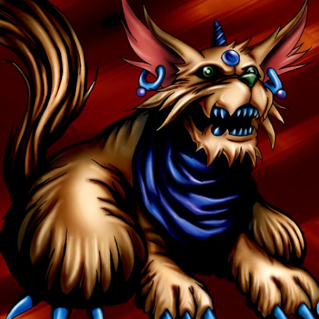

Milus Radiant

Description: "When this card is flipped face-up in battle, if the opposing card is a ZOMBIE monster, it is automatically destroyed."
STATS
ATK: 300
DEF: 250DECK COST
Deck Cost per Card: 11EFFECT NOT IMPLEMENTED
Fusion List (77 Possible Fusions)
- Milus Radiant + Abyss Flower = Flower Wolf
- Milus Radiant + Fairywitch = Nekogal #2
- Milus Radiant + Armaill = Flame Cerebrus
- Milus Radiant + Armed Ninja = Tiger Axe
- Milus Radiant + Bat = Giga-tech Wolf
- Milus Radiant + Battle Warrior = Tiger Axe
- Milus Radiant + Bean Soldier = Flower Wolf
- Milus Radiant + Bolt Penguin = Tripwire Beast
- Milus Radiant + Bone Mouse = Shadow Specter
- Milus Radiant + Candle of Fate = Flame Cerebrus
- Milus Radiant + Cannon Soldier = Dice Armadillo
- Milus Radiant + Charubin the Fire Knight = Flame Cerebrus
- Milus Radiant + Cockroach Knight = Nekogal #2
- Milus Radiant + Cyber-Stein = Giga-tech Wolf
- Milus Radiant + Dancing Elf = Nekogal #2
- Milus Radiant + Dark Plant = Flower Wolf
- Milus Radiant + Dark Witch = Nekogal #2
- Milus Radiant + Darkfire Dragon = Flame Cerebrus
- Milus Radiant + Dharma Cannon = Giga-tech Wolf
- Milus Radiant + Dissolverock = Flame Cerebrus
- Milus Radiant + Dream Clown = Tiger Axe
- Milus Radiant + Eyearmor = Tiger Axe
- Milus Radiant + Fire Eye = Flame Cerebrus
- Milus Radiant + Fire Reaper = Flame Cerebrus
- Milus Radiant + Firegrass = Flame Cerebrus
- Milus Radiant + Fireyarou = Flame Cerebrus
- Milus Radiant + Flame Ghost = Flame Cerebrus
- Milus Radiant + Flame Manipulator = Flame Cerebrus
- Milus Radiant + Flame Snake = Flame Cerebrus
- Milus Radiant + Goddess with the Third Eye = Nekogal #2
- Milus Radiant + Griggle = Flower Wolf
- Milus Radiant + Happy Lover = Garvas
- Milus Radiant + Hinotama Soul = Flame Cerebrus
- Milus Radiant + Hourglass of Life = Garvas
- Milus Radiant + Hyo = Tiger Axe
- Milus Radiant + Ice Water = Nekogal #2
- Milus Radiant + Jinzo #7 = Giga-tech Wolf
- Milus Radiant + Kagemusha of the Blue Flame = Flame Cerebrus
- Milus Radiant + Kageningen = Tiger Axe
- Milus Radiant + Kaminarikozou = Tripwire Beast
- Milus Radiant + Key Mace #2 = Nekogal #2
- Milus Radiant + Key Mace = Nekogal #2
- Milus Radiant + Lady of Faith = Nekogal #2
- Milus Radiant + LaLa Li-oon = Tripwire Beast
- Milus Radiant + Lunar Queen Elzaim = Nekogal #2
- Milus Radiant + M-Warrior #1 = Tiger Axe
- Milus Radiant + M-Warrior #2 = Tiger Axe
- Milus Radiant + Man-Eating Plant = Flower Wolf
- Milus Radiant + Man Eater = Flower Wolf
- Milus Radiant + Mavelus = Flame Cerebrus
- Milus Radiant + Mechanical Snail = Giga-tech Wolf
- Milus Radiant + Metal Dragon = Flame Cerebrus
- Milus Radiant + Mushroom Man = Flower Wolf
- Milus Radiant + Mysterious Puppeteer = Tiger Axe
- Milus Radiant + Mystical Elf = Nekogal #2
- Milus Radiant + Oscillo Hero #2 = Tripwire Beast
- Milus Radiant + Oscillo Hero = Tiger Axe
- Milus Radiant + Petit Angel = Garvas
- Milus Radiant + Princess of Tsurugi = Nekogal #2
- Milus Radiant + Protector of the Throne = Nekogal #2
- Milus Radiant + Queen's Double = Nekogal #2
- Milus Radiant + Queen of Autumn Leaves = Nekogal #2
- Milus Radiant + Shining Friendship = Garvas
- Milus Radiant + Skelengel = Garvas
- Milus Radiant + Skull Servant = Shadow Specter
- Milus Radiant + Snakeyashi = Flower Wolf
- Milus Radiant + Steel Scorpion = Giga-tech Wolf
- Milus Radiant + Stone D. = Tiger Axe
- Milus Radiant + Swordsman from a Foreign Land = Tiger Axe
- Milus Radiant + Tentacle Plant = Flower Wolf
- Milus Radiant + Vishwar Randi = Nekogal #2
- Milus Radiant + Water Element = Nekogal #2
- Milus Radiant + Water Magician = Nekogal #2
- Milus Radiant + Waterdragon Fairy = Nekogal #2
- Milus Radiant + White Dolphin = Tatsunootoshigo
- Milus Radiant + Wow Warrior = Tatsunootoshigo
- Milus Radiant + Yashinoki = Flower Wolf